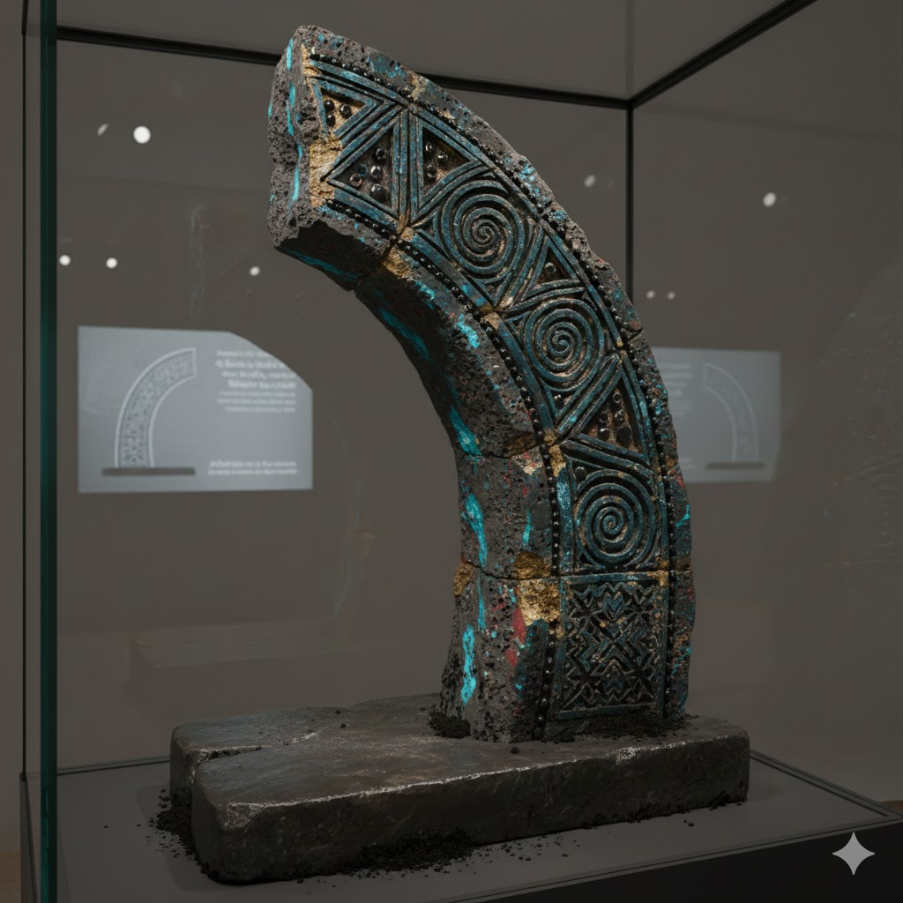
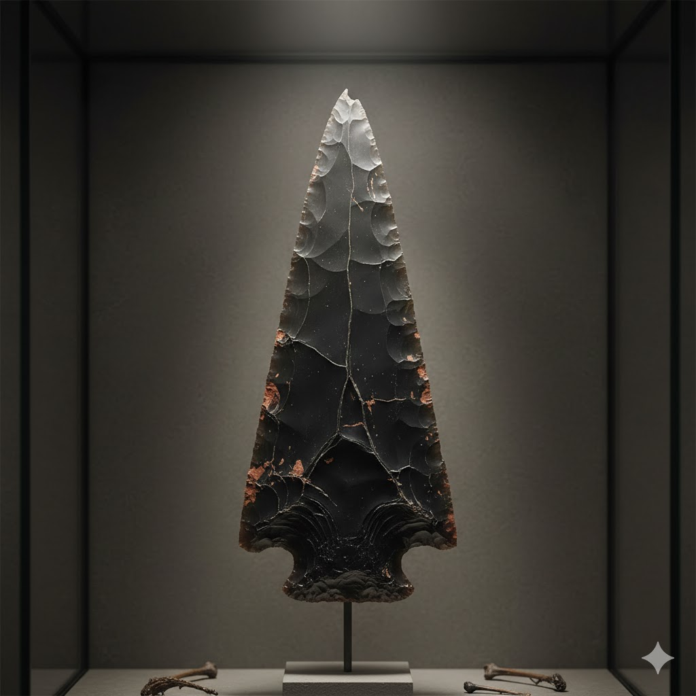
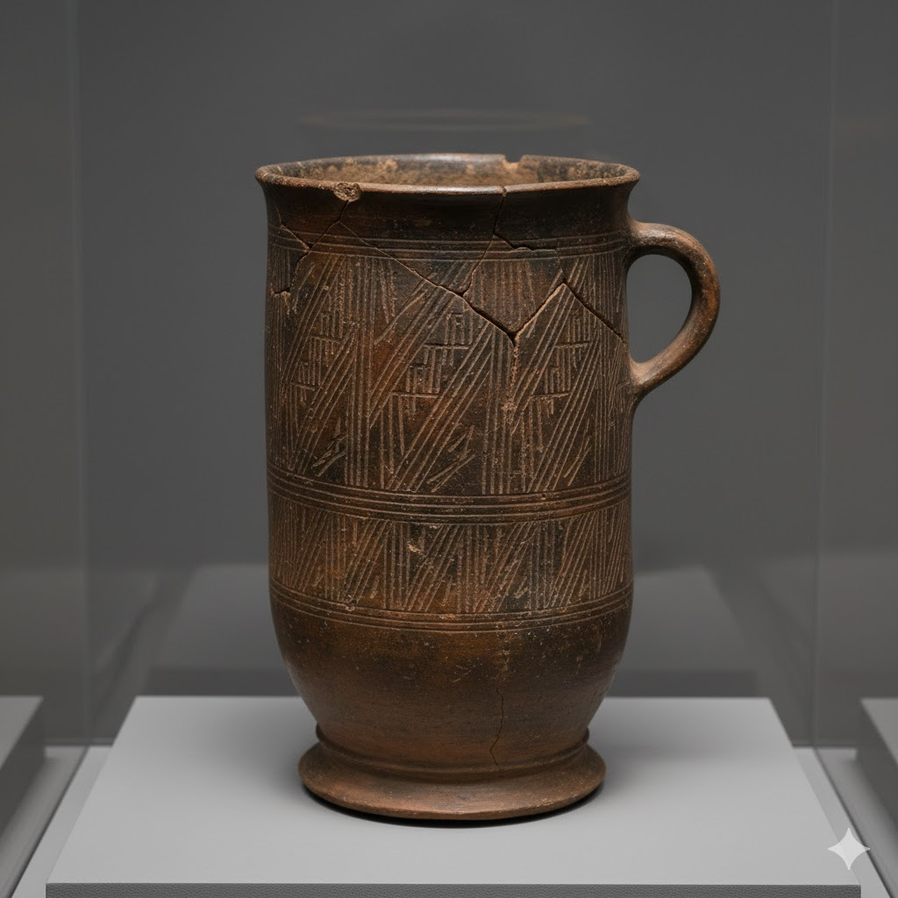

Archaeology

Marker Arch Fragment
Material: Dense composite stone (volcanic basalt, lunar silicate, fused ash)
Size/Weight/Shape: 2.3 m high segment; partial arc, tapering base; est. 1.4 metric tons
Estimated Age: ~22,000 years
Preservation State: Lower right third remains; inscription field partially intact
Size/Weight/Shape: 2.3 m high segment; partial arc, tapering base; est. 1.4 metric tons
Estimated Age: ~22,000 years
Preservation State: Lower right third remains; inscription field partially intact
Likely Purpose: Ceremonial or calendrical archway; seasonal passage marker
Evidence of Use: Polished threshold stone; soot traces beneath arch
Manufacture Clues: Precision jointing; angle-carved keystone; 7-point symbol array
Evidence of Use: Polished threshold stone; soot traces beneath arch
Manufacture Clues: Precision jointing; angle-carved keystone; 7-point symbol array
Found With: Burnt charcoal flecks, obsidian beads, crushed pigment
Burial or Habitat Context: Buried beneath basalt and sediment; ridge stabilized by stonework
Symbolism: Spiral and nested triangle motifs; possibly celestial alignment
Comparison: Similar to standing stone gates at Aetha-Zul but with finer symbolic work
Burial or Habitat Context: Buried beneath basalt and sediment; ridge stabilized by stonework
Symbolism: Spiral and nested triangle motifs; possibly celestial alignment
Comparison: Similar to standing stone gates at Aetha-Zul but with finer symbolic work

Obsidian Spearhead
Material: Volcanic glass (obsidian)
Size/Weight/Shape: 18 cm length; triangular cross-section; sharp point
Estimated Age: ~12,500 years
Preservation State: Fragmented tip; lateral flake scars visible
Size/Weight/Shape: 18 cm length; triangular cross-section; sharp point
Estimated Age: ~12,500 years
Preservation State: Fragmented tip; lateral flake scars visible
Likely Purpose: Hunting weapon; ritualized object
Evidence of Use: Chipped edges; polish at hafting point
Manufacture Clues: Pressure flaking; fine retouch along edges
Evidence of Use: Chipped edges; polish at hafting point
Manufacture Clues: Pressure flaking; fine retouch along edges
Found With: Charred bird bones, red ochre traces
Burial or Habitat Context: Cave midden deposit
Symbolism: Possible ritual significance
Comparison: Similar to spearheads in nearby Aetha cave system
Burial or Habitat Context: Cave midden deposit
Symbolism: Possible ritual significance
Comparison: Similar to spearheads in nearby Aetha cave system

Clay Storage Vessel
Material: Fired terracotta clay
Size/Weight/Shape: 45 cm height; 25 cm diameter; cylindrical
Estimated Age: ~3,200 years
Preservation State: Cracks along rim; handle intact
Size/Weight/Shape: 45 cm height; 25 cm diameter; cylindrical
Estimated Age: ~3,200 years
Preservation State: Cracks along rim; handle intact
Likely Purpose: Storage of grains or liquids
Evidence of Use: Soot around neck; sediment residues inside
Manufacture Clues: Wheel-thrown; coiled base; linear incisions
Evidence of Use: Soot around neck; sediment residues inside
Manufacture Clues: Wheel-thrown; coiled base; linear incisions
Found With: Grain remnants; small cup fragments
Burial or Habitat Context: House floor; domestic refuse pit
Symbolism: Linear incisions may indicate ownership or family clan
Comparison: Similar vessels from Bronze Age settlements nearby
Burial or Habitat Context: House floor; domestic refuse pit
Symbolism: Linear incisions may indicate ownership or family clan
Comparison: Similar vessels from Bronze Age settlements nearby